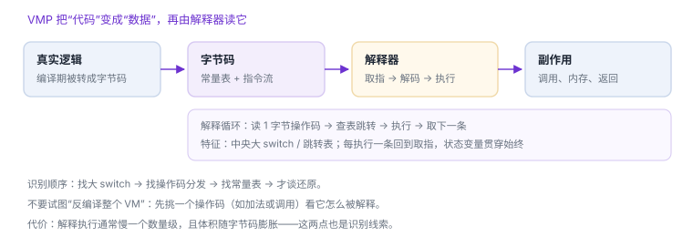

VMP：解释循环与还原路径
不是加密，是换了一台“虚拟机”来跑你的逻辑
虚拟机保护（VMP）把机器码换成自定义字节码，运行时由一个解释器逐条执行。它防的不是“读”，而是“读得懂”——静态反汇编看到的只是解释器，业务逻辑藏在数据里。
场景 你把函数交给反汇编器，出来几百行长得一样的循环：读一个字节、查表、跳转、再回来。真正的加法、比较、调用，全都不见了。
1. 三件套：字节码、解释器、上下文
| 组成 | 形态 | 分析价值 |
|---|---|---|
| 字节码 | 常量表 + 指令流 | 真正的逻辑在这里，但不是机器码 |
| 解释器 | 分发循环 + 大 switch | 识别 VMP 的第一线索 |
| 上下文 | 虚拟寄存器、栈、PC | 解释“上一条指令留下什么” |

2. 先识别，再动手
- 找分发循环：一个函数里出现“取一字节 → 乘 4 → 查跳转表 → 间接跳转”。
- 找操作码范围：统计 switch 分支数量，通常在几十到几百之间。
- 找常量表：解释器附近有一块只读数据，被同一条指令反复读取。
- 确认不是状态机：平坦化混淆也有分发，但它的“状态”会回到少数几个块；VMP 的分支数量和上下文结构明显更大。
解释循环的骨架（示意）
for (;;) {
uint8_t op = code[pc++];
switch (op) {
case OP_ADD: reg[a] = reg[b] + reg[c]; break;
case OP_CMP: flag = reg[a] < reg[b]; break;
case OP_CALL: call(reg[a], reg[b]); break;
case OP_EXIT: return;
}
}读法：code[pc++] 取指，switch 解码。编译器常把它变成跳转表，于是反汇编里只剩一条间接跳转 + 一张表——这就是“明明有分发却看不到 switch”的原因。
3. 阅读顺序：从一条操作码开始
不要试图一次还原整个 VM。挑一个最容易验证的操作码（加法、比较、调用），看它读几个字节、改哪些虚拟寄存器、如何前进 PC。把这条链路走通，再按需扩到相邻操作码。
| 步骤 | 产出 | 验证方式 |
|---|---|---|
| 定位分发器 | 操作码 → 处理函数映射 | 改一个字节码，看走的分支是否变化 |
| 解析一条指令 | 该操作码的语义与长度 | 构造输入，比对其结果 |
| 建立小词典 | 10–20 条操作码 | 能读懂一个短函数 |
4. 原理推演：为什么 VMP 一定要有“解释”这一层
如果只是加密机器码，解密后仍要交给 CPU 执行，那么只要找到解密后的内存就能读。要让逻辑“不成为机器码”，就必须自己扮演 CPU：定义指令集、维护寄存器与 PC、逐条执行。解释层不是附加保护，而是 VMP 存在的前提。
这也给出两条实用推论：解释器本身不能被保护（否则它自己跑不起来），所以它一定以明文机器码存在；字节码必须能被解释器读，所以它一定在运行期以可读形式出现。
5. 代价
| 代价 | 表现 |
|---|---|
| 性能 | 解释执行慢一个数量级，热点函数尤其明显 |
| 体积 | 字节码 + 常量表膨胀，包体变大 |
| 可观测性 | 崩溃栈里出现解释器帧，符号化后仍读不懂业务 |
6. 自测
- 为什么 VMP 的解释器必然以明文机器码存在？
- 平坦化混淆与 VMP 的分发循环，怎么快速区分？
- 为什么建议从一条操作码开始，而不是先写“通用反编译器”？
- 性能开销为什么反而成了识别线索？